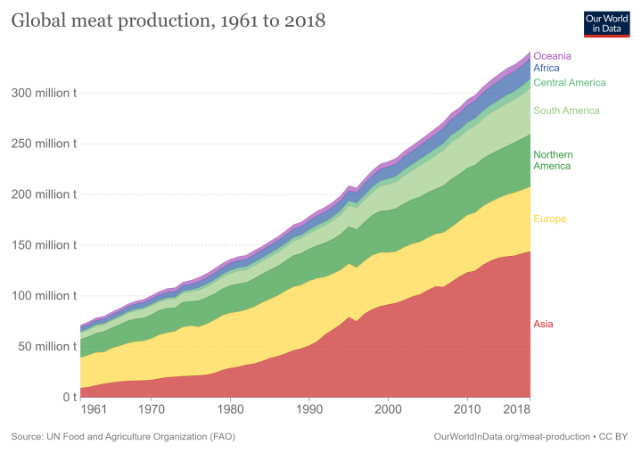

Diet and Livestock
Start editing to see some magic happen!

There are currently 7.9 billion people in the world, and our population is expected to grow to 10 billion by 2050. Traditional diets consisted primarily of meat with some meat. However, with industrial meat production, the production of and demand for meat has risen. Global meat production has increased from 71 million tonnes in 1961 to 341.16 million tonnes in 2018, and this number is expected to keep growing. We will need to produce more food to feed a growing population, and it is important to understand the implications this will have on our global carbon footprint. A lot of land, water, and food is used to raise livestock, and as the the global population and the demand for meat continue to grow, it will become difficult to justify using these resources for livestock instead of directly feeding our population.
What can you do?
On the surface, it can seem like there is not much one person can do to reduce global greenhouse gas emissions from livestock. However, it is important to understand the impact each person can make collectively using their votes and their wallets. An individual's change in diet may not significantly reduce global greenhouse gas emissions from livestock, but multiple people reducing their meat intake will reduce local demand for livestock products, which can reduce local livestock production. You can also vote for sustainability-minded politicians who will provide funding for meat substitute research and who can enact changes in their local livestock sectors through legislation.
Resources
To learn more about greenhouse gas contributions by livestock production you can use the following resources: